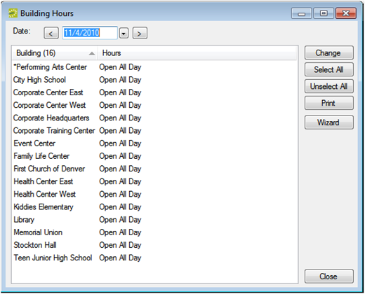
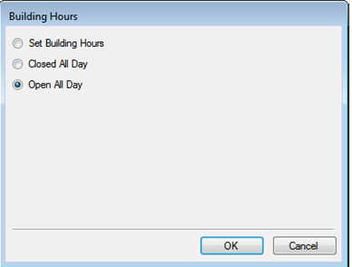

By configuring building hours, you can set times when buildings and rooms therein are not available for scheduling.
In the
By default, when you configure a building, the building hours are set to Open All Day, which means that the building is open 24 hours a day, 7 days a week, 365 days a year. If needed, you can configure the hours for a building so that a building is open only for a specified time period on a particular date or for a given date range. You can also configure the hours so that a building is closed all day. You can configure the hours for a building for a single date, or you can configure the hours for multiple dates in a single step.
You can configure the same hours for multiple buildings using the Building Hours Wizard.

Building Hours Window

Building Hours Dialog
If you select multiple buildings, then the Building Hours dialog box reflects the hours for the building that is last in the list of selected buildings. You can set the same building hours for multiple buildings simultaneously using the Building Hours Wizard.
|
Option |
Description |
|---|---|
|
Set Building Hours |
Select this option to specify the time period (Open and Close) during which the building is to remain open for the date. Your |
|
Closed All Day |
Select this option to close the building for the entire day. When you select this option, then a Web Only option is displayed on the Building Hours dialog box.
|
|
Open All Day |
The default value. Leave this option selected to have the building remain open for the entire holiday. |